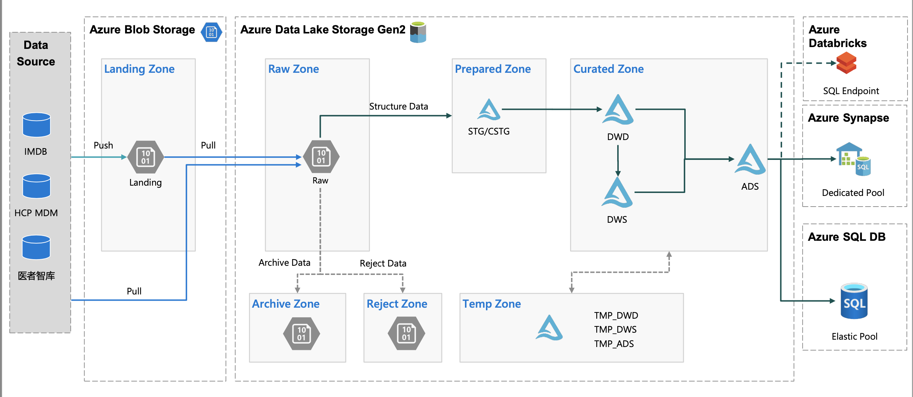

SCAN
SCAN stands for Supply Chain ANalytics. SCAN is an analytics program within Janssen Supply Chain. Our aim is to accelerate value delivery by providing analytics as a service.
- Capability building (data and analytics training)
- Democratized data
- Dashboarding & visualisation support
- Advanced analytics
Objectives:
- Enable data value for business insight
- Data governance: Identify data ownership, establish data governance rules and process for data creation, using and sharing internally & externally.
- Data protection: Meet the requirement from legal/quality/Cyber security of data protection
- FAIR principle
- Build up data catalog to make sure data can be findable, and easier to understand
- Data can be accessible by user,
- build up integration function to make sure data Interoperable by other applications.
- Store, combine and clean data to make the data reusable by user and other applications.
CDL
EDW 企业数据仓库: The primary function of the Enterprise Data Warehouse, is to provide a centralized data store of enterprise-level data.
The Common Data Layer (CDL) is a repository that centralizes the Supply Chain Data.This common layer can support all digital solutions across the business. The CDL ingests and publishes near real-time data from supply chain systems globally. The Level 0 layer of the CDL is a direct reflection of the data as it is stored in the upstream source systems.
CDL defined Databricks as the tool to use for data consumption. A secure access to CDL is given via an Azure Active Directory (AD) credential passthrough.
DAYU
MedTech China SC data foundation project to store and combine data from multiple sources as well as build up data catalog to make it findable, reusable and easier to understand.
数据来源：
- SAP (WinShuttle)
- IMDB (API / Parquet)
- Manual report (Azure Storage Explorer)
Data flow

-
Raw Zone: 数据通过source源接入湖raw层，原始数据格式（excel，CSV，json，txt），处理完后移入Archive
-
Archive Zone: 历史所有全量文件，按时间戳分文件夹，原始数据格式
-
Prepared Zone: 数据清洗和规范化，Parquet格式，STG保留全部增量（增加insert_time字段），CSTG根据不同更新方式（增量/容错性增量/全量更新）清洗得到全量数据
-
Curated Zone: 数据逻辑处理
-
DWD: 数据细节层，采用雪花模型，维度表没有冗余
- dw_: 事实表
- dim_: 维度表(主数据)
-
DWS: 数据服务层，星型模型，维度表可有冗余，对通用业务逻辑进行统一处理，按年度、季度进行预汇总
-
ADS: 数据应用层，按需汇总成报表所需结果，可适当采用大宽表
- dm_: 聚合为摸个主题的宽表
-
雪花模型：连接多，冗余低，性能低
星型模型：连接少，冗余高，性能高
Azure Blob Storage
Azure Blob Storage 是 Microsoft 提供的适用于云的对象存储解决方案。 Blob 存储最适合存储巨量的非结构化数据。
Azure Data Lake Storage Gen2 在 Blob 存储的基础上构建，提供了分层文件系统以及 Blob 存储的优势，并通过以下方式增强了性能、管理和安全性：
- 分层命名空间极大地提高了目录管理操作的性能，从而提高了整体作业性能。
- 管理更为容易，可以通过目录和子目录来组织和操作文件。
- 可以在目录或单个文件上定义 POSIX 权限。
Azure storage offers different access tiers:
- Hot tier: 适用于存储经常访问或修改的数据的联机层。存储成本最高，但访问成本最低。
- Cool tier: 适用于存储不经常访问或修改的数据的联机层。至少存储 30 天。存储成本较低，访问成本较高。
- Archive tier: 适用于存储极少访问且延迟要求不严格的数据的脱机层。应至少存储 180 天。
Lifecycle management policy:
Azure 存储生命周期管理可提供基于规则的策略，用于将 blob 数据转移到最适合的访问层，或在数据生命周期结束时使数据过期。
Storage account -> Lifecycle management -> Add a rule
Data Modeling
- DCL (Data Control Language): 数据控制语句，用于控制访问级别，grant / deny
- DDL (Data Definition Languages): 建表语句 create / drop / alter
- SCHEMA: raw/archive/prepared 以数据源命名，curated 以主题域命名
- TABLE
- DML (Data Manipulation Language): 数据处理语句，添加、删除、更新和查询数据库记录 insert / delete / update / select
Data Factory
作业编排
- 第一层 GrandParent：最高级别，触发业务流程，按业务分组
- 第二层 Parent：次高级别，支持和管理子活动的并行执行
- 第三层 Child：配合Parent的功能层，获取在父级别需要执行的对象，然后进行执行任务，若存在依赖检查依赖状态
- 第四层 Worker：实现具体抽取、转换、加载的任务层，该层根据实际的需要进行设计和开发，并用作并行调度
日志输出
create procedure dayu_ActivityStart
@BatchRunId varchar(200), @PipelineCode varchar(200), @RunId varchar(200), @ActivityCode varchar(200)
as
insert into [dbo].[ADF_ActivityLogs] with (UPDLOCK) (BatchRunId, RunId, PipelineCode, ActivityCode, StartTime)
VALUES (@BatchRunId, @RunId, @PipelineCode, @ActivityCode, DATEADD(HOUR, 8, getUTCdate()))
exec dayu_ActivityStart 'test01', 'ActivityName', 'test03', 'DIM_Table'
create procedure dayu_ActivityLog
@BatchRunId varchar(200), @RunId varchar(200), @Result varchar(200), @ActivityOutput varchar(max)
as
update [dbo].[ADF_ActivityLogs] with (UPDLOCK)
set EndTime = DATEADD(HOUR, 8, getUTCdate()), ActivityStatus = @Result, ActivityOutput = @ActivityOutput
where BatchRunId = @BatchRunId and RunId = @RunId
exec dayu_ActivityLog 'test01','test03', 'Success', 'exec Success'
ActivityOutput(Success): @string(activity(‘xxx’).output)
ActivityOutput(Failed): @activity(‘xxx’).output.errors[0].Message
SQL Server
将 DIM/DM 层数据导入 SQL Server 供 Power BI 消费可降低成本。
A low cost option would be to create an Azure Synapse Analytics workspace and use a serverless SQL pool to query the delta content. A serverless pool exposes itself as an Azure SQL DB. Since this is a serverless instance there is no provisioning costs. You’d only pay for the consumption (e.g. the actual query).
若要直接读取 Delta table 需要 Set Up the API Server，会使用到 databricks 的cluster 计算资源，成本更高。
https://www.cdata.com/kb/tech/databricks-odata-nodejs.rst